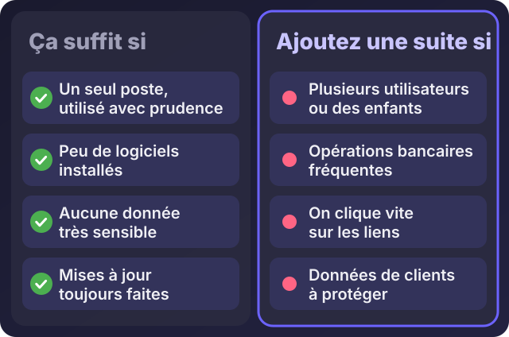
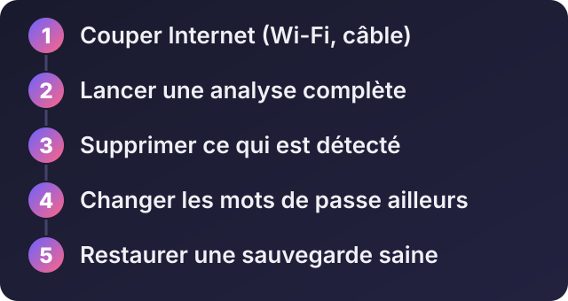

Accueil / Blog / Informatique au quotidien
Informatique au quotidienQuel antivirus choisir ? Windows Sécurité (Defender) suffit-il vraiment ?

Écouter cet article · environ 4 min
« Quel antivirus me conseillez-vous ? » C'est l'une des questions que je reçois le plus. La réponse surprend souvent : pour beaucoup de gens, celui qui est déjà dans Windows suffit. Mais pas pour tout le monde, et pas pour n'importe quel usage. Voici comment décider.
Ce que fait (et ne fait pas) un antivirus
Un antivirus surveille votre ordinateur, repère les programmes dangereux et les bloque ou les supprime. Il aide contre les virus, les logiciels espions et les rançongiciels (qui chiffrent vos fichiers et réclament de l'argent).
Il ne protège pas de vous-même : un mot de passe donné à un faux site, un « agent » qui vous appelle et vous demande votre code, une pièce jointe ouverte par erreur. C'est pourquoi les réflexes comptent autant que le logiciel.
Windows Sécurité : l'antivirus déjà installé
Windows contient son propre antivirus, Windows Sécurité (le moteur s'appelle Microsoft Defender). Il est activé d'office, se met à jour tout seul, et ne coûte rien. Les laboratoires qui testent régulièrement les antivirus, comme AV-TEST et AV-Comparatives, le placent aujourd'hui parmi les solutions sérieuses, même si ses résultats ont varié selon les années et les tests.
Pour un seul ordinateur, utilisé avec prudence, il fait en général l'essentiel du travail, à condition que Windows soit à jour.
Quand ajouter une suite de sécurité

Une suite payante peut valoir la peine si vous êtes dans l'un de ces cas :
- Plusieurs utilisateurs ou des enfants sur le même ordinateur : elle apporte un contrôle parental et des protections supplémentaires.
- Des opérations bancaires ou des paiements fréquents : certaines suites ajoutent une protection du navigateur.
- Vous cliquez vite sur les liens : une protection contre les sites frauduleux peut vous éviter une erreur.
- Des données de clients à protéger : mieux vaut une protection plus complète, avec des sauvegardes.
Si vous en choisissez une, prenez un éditeur reconnu, testé régulièrement par les laboratoires indépendants cités plus haut. Regardez leurs résultats récents plutôt que les classements de sites qui touchent une commission. Je ne reçois aucune commission : mon intérêt est que votre ordinateur fonctionne.
Les règles qui évitent les ennuis
- Un seul antivirus actif à la fois. Deux antivirus en protection permanente se gênent et ralentissent la machine.
- Méfiez-vous des fenêtres qui annoncent « Votre ordinateur est infecté ». Ce sont presque toujours de faux messages, pour vous faire installer un faux antivirus.
- Évitez les « nettoyeurs » et « accélérateurs » inconnus : beaucoup sont plus dangereux que le problème qu'ils prétendent régler.
- Gardez tout à jour : Windows, le navigateur, vos logiciels. Une grande partie des infections passent par des failles déjà corrigées.
- Pour un deuxième avis, un outil d'analyse manuelle comme Malwarebytes peut passer derrière votre antivirus, de temps en temps, sans le remplacer.
- Sur téléphone Android, n'installez que depuis Google Play, où Play Protect surveille les applications.
Si vous pensez être infecté

- Coupez Internet : Wi-Fi ou câble. Cela limite les dégâts et empêche l'envoi de vos données.
- Lancez une analyse complète avec Windows Sécurité.
- Supprimez ce qui est détecté, et redémarrez.
- Changez vos mots de passe, mais depuis un autre appareil sain (par exemple votre téléphone) : si l'ordinateur est infecté, le nouveau mot de passe serait volé aussi.
- Restaurez une sauvegarde saine si des fichiers sont abîmés. Si le problème revient, faites réinstaller le système.
Quand faire appel à un expert
Si l'ordinateur sert à votre entreprise, si des fichiers sont chiffrés ou ont disparu, si vous avez donné des codes bancaires ou si le problème revient, ne bricolez pas. Un expert peut analyser, nettoyer, réinstaller proprement, et mettre en place une sauvegarde pour que cela ne se reproduise pas.
Décrivez-moi ce qui se passe sur WhatsApp : je vous dis si vous pouvez régler cela vous-même ou si c'est le moment d'une intervention.